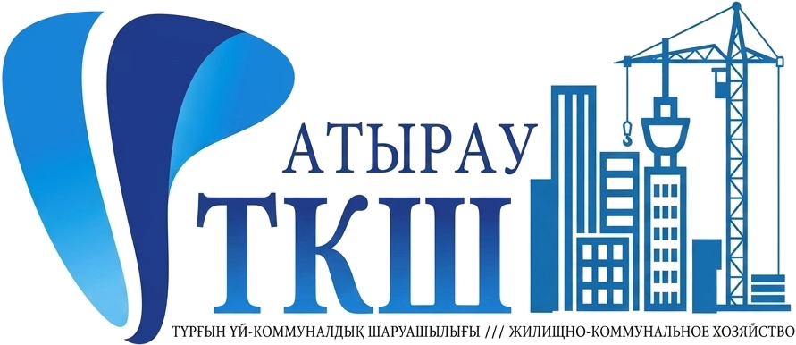
Отдел ЖКХ и жилищной инспекции г. Атырау
Жилищно-коммунальное хозяйство города Атырау
Текущее состояние, основные проекты и потребность в бюджетном финансировании

Текущее состояние, основные проекты и потребность в бюджетном финансировании
Цель — качественная питьевая вода, снижение износа и аварийности сетей. Завершение — 2026 год
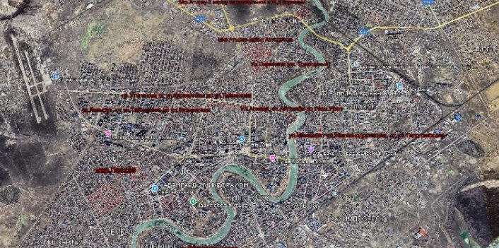
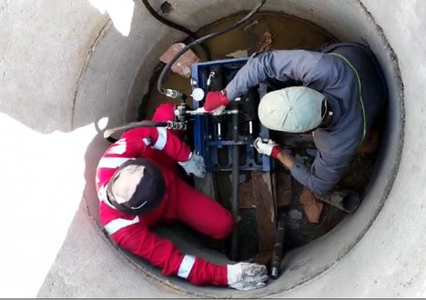
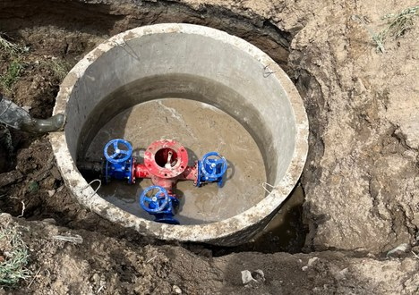
Изношенные канализационные трубы — 33,4 км, 3 пусковых комплекса
Восстановление труб изнутри без вскрытия грунта; остальные участки — иными методами
Обновлённая сеть: герметичность и пропускная способность
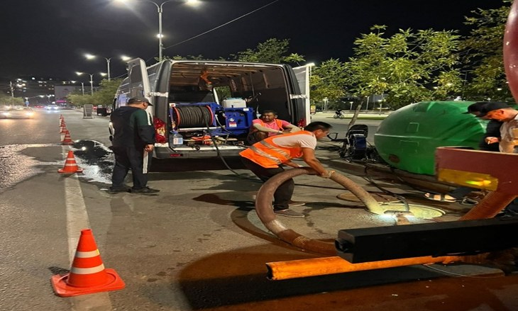
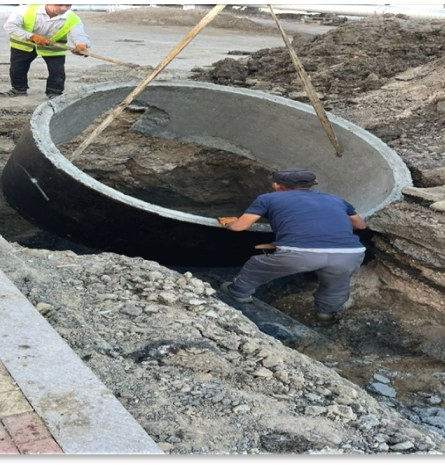
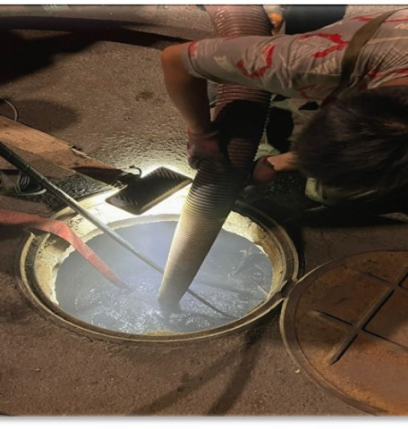
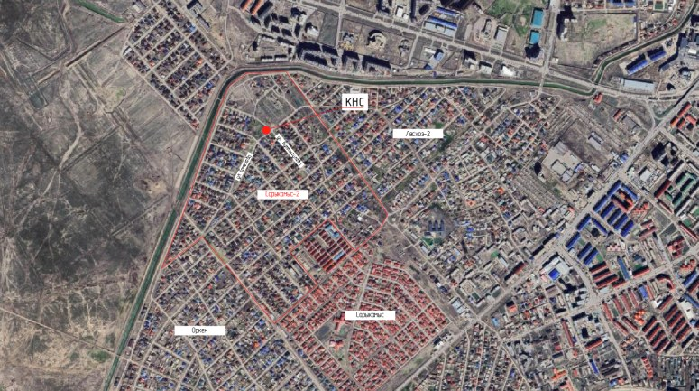
Мощность — 31 тыс. м³ в сутки
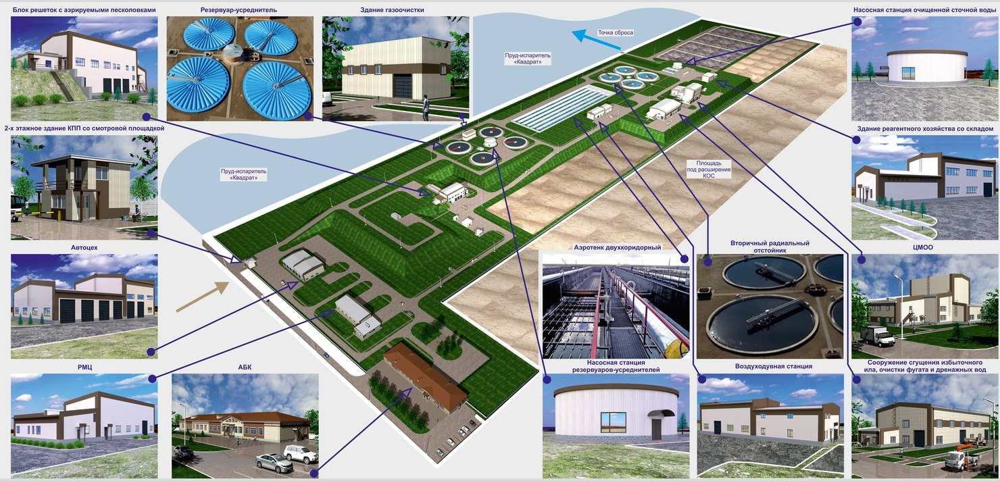
Принимает очищенные сточные воды правобережных КОС после обеззараживания
Изношенные подземные высоковольтные линии
Высокий износ и аварийность
162 км в городе и пригородных сёлах
Изоляция из сшитого полиэтилена (СПЭ)
Бесперебойное электроснабжение, меньше аварий
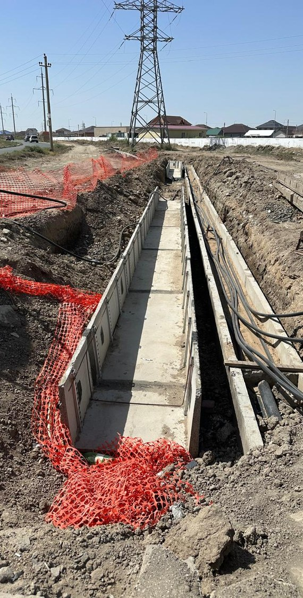
ГЧП с АО «Батыс Транзит». После 7 этапа — ≈1 640 освещённых улиц (+22,4%)
Опоры в неудовлетворительном состоянии — угроза безопасности жителей
Объекты: уличное освещение, игровые и спортивные площадки, иные объекты на балансе акимата
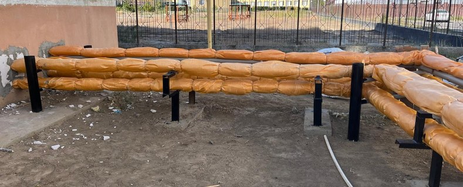
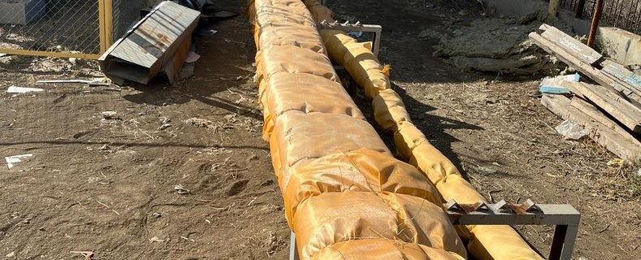
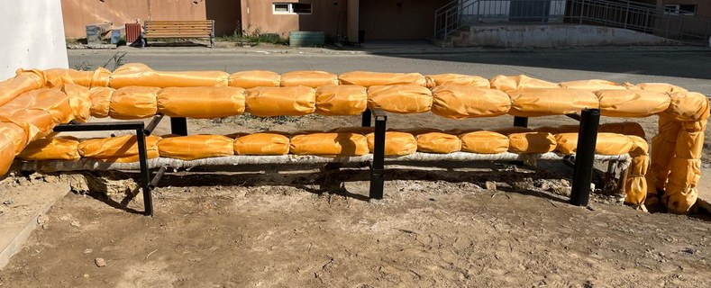
45 000 га, 6 сельских округов. В 2026 г. задействованы 20 КАМАЗ, 5 погрузчиков, 420 работников
Для полного охвата территории не хватает техники и людей: нужно ещё 10 погрузчиков, 5 КДМ, 10 КАМАЗ и 100 работников
Низкие темпы покоса, неполный вывоз травы
2026: договор с ТОО «AG Disinfection services» — 117,4 млн тг; охват неполный, закупки нужны до апреля. С 2027 г. — трёхлетний план с профильной организацией
Стоимость договоров увеличена с 6,8 до 10,8 млрд тг после корректировки 6 из 7 проектов
Разработка ПСД начата; финансирование — бюджет. Виды работ — как в проекте «100 дворов»
Авангард, Нұрсая, Владимирский, ул. Құрманғазы
Нұрсая, СМП-136, СМП-163, Вокзал маңы, ул. Махамбет
Авангард, Сәтбаев, Жилгородок, Балықшы
Нұрсая, СМП-163, ул. С. Датова, пр. Азаттық
пр. Азаттық, Ескі аэропорт, Жеті қазына, ул. С. Датова, Гурьевский
Авангард, Сәтбаев, Нұрсая, Береке, Геолог
Нажмите на фото, чтобы открыть его на весь экран
Суммы относятся к разным периодам (2026, 2027, ежегодно)
Пункты 1–3 — критический приоритет: безопасность жителей и бесперебойность коммунальных услуг
| № | Проблемный вопрос | Текущее состояние | Последствия | Что необходимо |
|---|---|---|---|---|
| 1 | Котельные ЖК «Самал Таун», «Family», «Абырой» | Изношены, не готовы к сезону; не приняты на баланс | Аварии в отопительный сезон | Принять на баланс; котлы и насосы — 435 млн |
| 2 | Аварийные опоры ЛЭП | Осталось заменить 2 414 опор | Угроза безопасности жителей | 554,4 млн на 2027 год |
| 3 | Правобережные КОС | СМР 85%; долг 944,0 млн; ПНР не профинансированы | Остановка работ, срыв ввода | Остаток 4,5 млрд, погашение долга, ПНР |
| 4 | Кабельные сети 162 км | Высокий износ и аварийность | Отключения жилья и соцобъектов | 15,9 млрд после утверждения БИП |
| 5 | Безнадзорные собаки | 2-й договор не оплачен; скотомогильник аварийный | Риск у школ и детсадов | Финансирование, крематорий, ремонт |
| 6 | Водопровод, 1–3 этапы | Не хватает 3 097,4 млн | Срыв завершения в 2026 | 3 097,4 млн в текущем году |
| 7 | Рост тарифа на электроэнергию | +60,7% с 01.10.2026 | Нехватка средств на оплату | 509,6 млн (IV кв.); 2 038,4 млн в год |
| 8 | Жилищный фонд | 379 МЖД старше 50 лет, из них 208 гипсоблочных; 345 домов без управления | Рост аварийности, невозможность ремонта | Обследование, создание ОСИ |
| 9 | Термомодернизация 2020–2022 | 10 объектов не завершены (712,4 млн) | Неэффективное использование средств | Завершить работы, проверить КСК/ПИК |